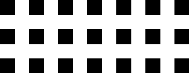

idk Logo Animation
It's been a while since my last post, but today I want to walk you through the process of creating a logo animation for "idk." In this brief post, I'll share the steps I took to bring this logo to life.
Preparing the Grid
To kick things off, we need to represent the logo within a grid and then render it. For this task, we'll be using Python along with the Pillow library. The idea here is to start with all the grid elements in their initial scattered state and then animate each element one by one to form the logo. While using logic to automate this process might be an option, I found that manually crafting the animation is more intuitive and feasible.
Enhancing Animation Smoothness
In the initial stages, our animation may appear somewhat jittery since we're merely capturing images of the evolving grid. To enhance the quality of the animation, we'll animate the movement of individual elements. This can be achieved by computing the differences between the current grid and the subsequent one, and then smoothly transitioning the elements. We'll employ a for loop to iterate through various steps of this process.
Final Touches
At this stage, our animation comprises approximately 200 frames and features a limited color palette. This presents a prime opportunity for optimization. Using an optimizer, we've dramatically reduced the file size, shrinking it from 122.7 kB to a mere 13.2 kB. While the colors may exhibit slight variations post-optimization, this is an acceptable trade-off given the significant file size reduction. To wrap up the process, we've ensured the animation is correctly sized, and any issues with transparency have been resolved by placing it on a white background.

Thanks for reading.